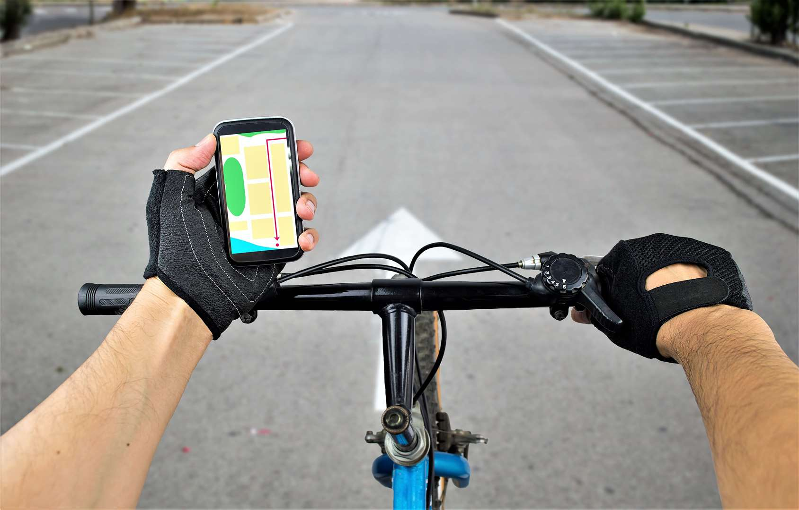

library(tidyverse)
library(tidymodels)
load('HumanActivityRecognition.Rdata')Module 5 Lab: Human Activity Recognition w/ KNN & Cross-Validation

Our cellphones and smartwatches record a lot of different kinds of data. There’s our search history and web traffic, of course, but also GPS, audio data, and a variety of sensors, including a gyroscope, accelerometer, and gravity sensor. In this module, we’ll see how that sensor data can be used to predict what a user is doing during some interval of time–whether they’re sitting down, riding a bike, driving a car, etc. This type of analysis might be useful, for example, for a tech company to figure out your interests and serve up targeted ads, or to deliver content/functionality at just the right moment (e.g. maybe you want your maps interface to change automatically depending upon whether you are biking, driving, or walking).
The dataset for this module contains summarized data (i.e. means, maxs, mins, etc) from the accelerometer, gyroscope, and gravity sensor of a smartwatch while participants performed various actions. In this lab, we’ll train models to predict which activity is being performed from the cellphone sensor data, and use resampling techniques to optimize performance on the test set.
Library and data loading
Exploratory visualization
One thing to notice is that we have substantial “class imbalance,” meaning there are many observations of some activities–such as cycling and football–and far fewer observations of other activities, such as jogging and pushups. Class imbalance can cause problems for our model, because the training data is driven much more strongly by only a subset of activities.
To deal with this problem, we can use resampling techniques. We can either “upsample,” to get more observations of the rarer classes, or “downsample,” to have fewer observations of the more common classes.
In this case, we will try upsampling, using the step_upsample() function. We can set over_ratio to .5, meaning we will oversample the classes with fewer observations until they have 50% as many observations as the class with the most observations.
Preparing our modeling workflow
As you learned in this module’s lectures, having too many predictors in our model can be problematic, if they aren’t all useful. However, we haven’t yet learned about techniques for dealing with that potential problem (that’ll be in the next module), so for now we will just use all of the predictors.
Initial model fitting
Crossfold validation to estimate performance on test set
Hyperparameter tuning
Evaluating performance on the test set
We have obtained an accuracy metric for each model, but how do we know if this is “good” performance or not? We need to compare our final model with a null model.
A null model represents the best guess one could make before seeing any of the predictor variables. For our dataset, if we were guessing completely randomly, we would be right 1/12th of the time (8.3% accuracy), because there are 12 classes. However, we could make a better guess by taking into account the distribution of the data, which is uneven–some activities account for more than 1/12th of the data, and others for less. As such, a null model could label every activity as whatever is the most frequent activity in our dataset, and it might still do better than 8.3% accuracy.